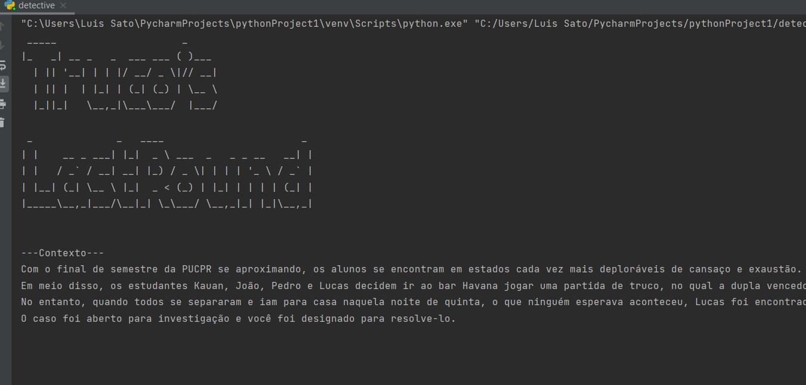
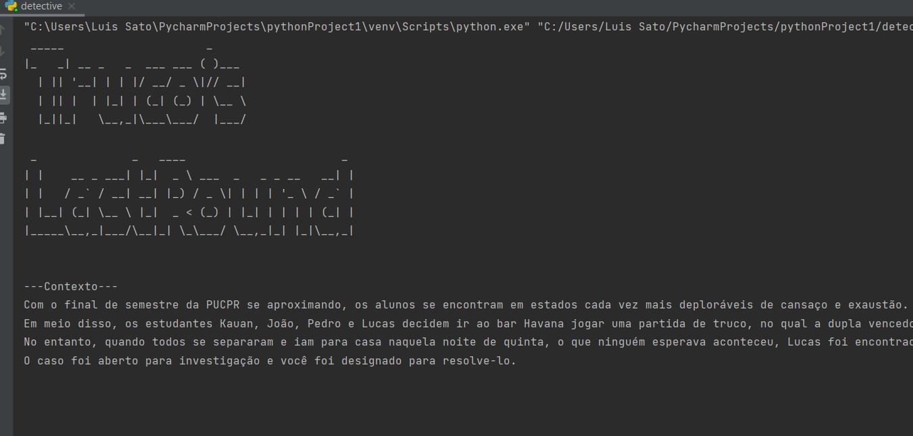

podermos desenvolver a nossa capacidade lógica e dedutiva e assim, futuramente, podermos
aplicar esse conhecimento na programação. Durante o semestre, vimos muitas formas de
manipulação sintática dessas proposições, além de aprendermos diversas regras de inferência
e outras funcionalidades. Também houve um trabalho de desenvolvimento de um jogo de detitive
aplicando nossos conhecimentos sobre manipulação sintática.
 
